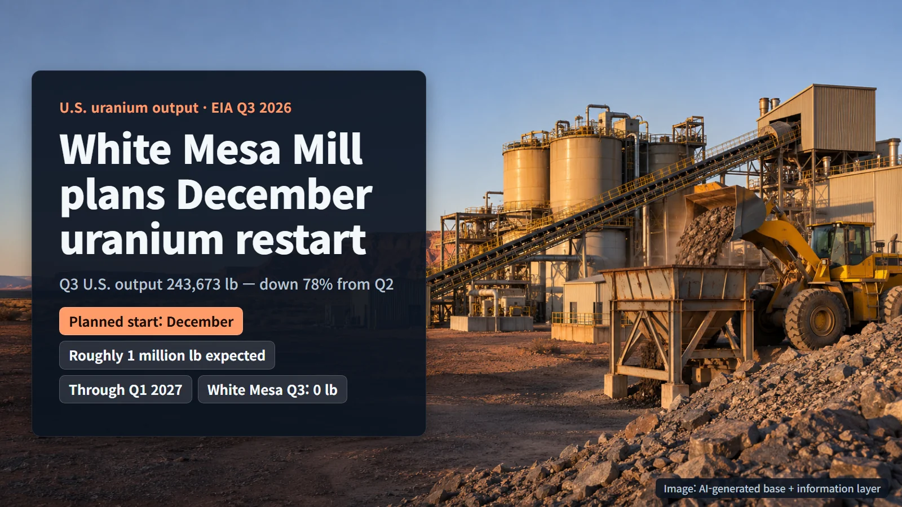
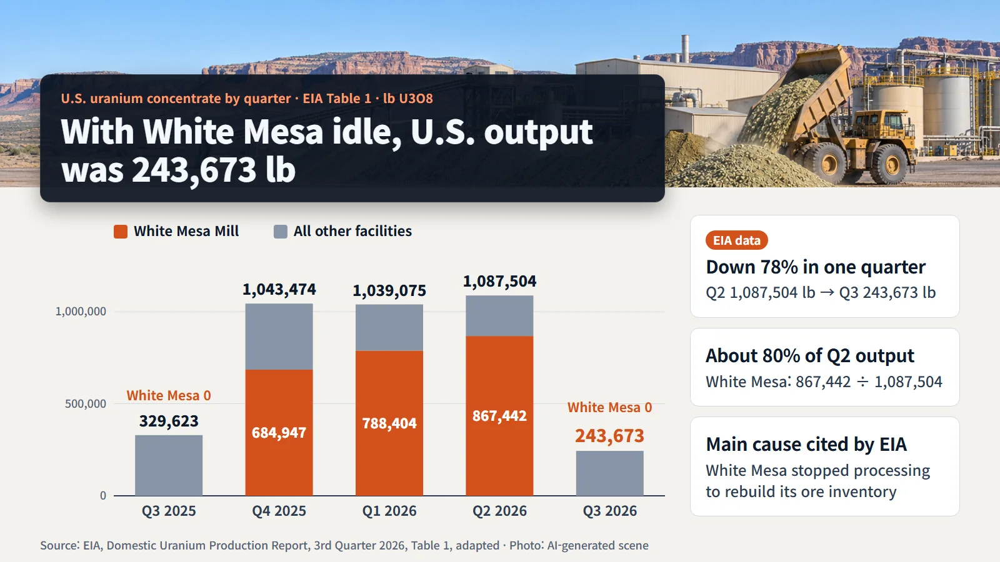
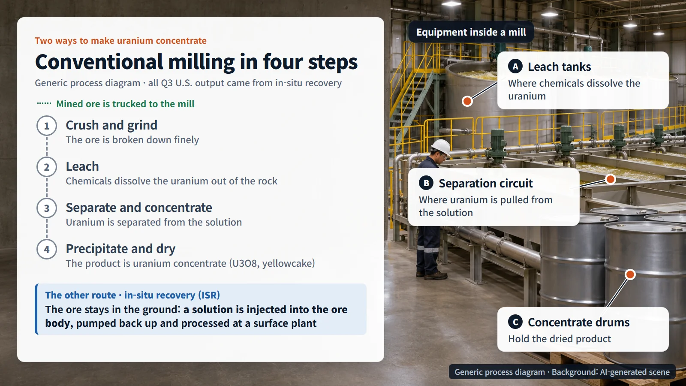
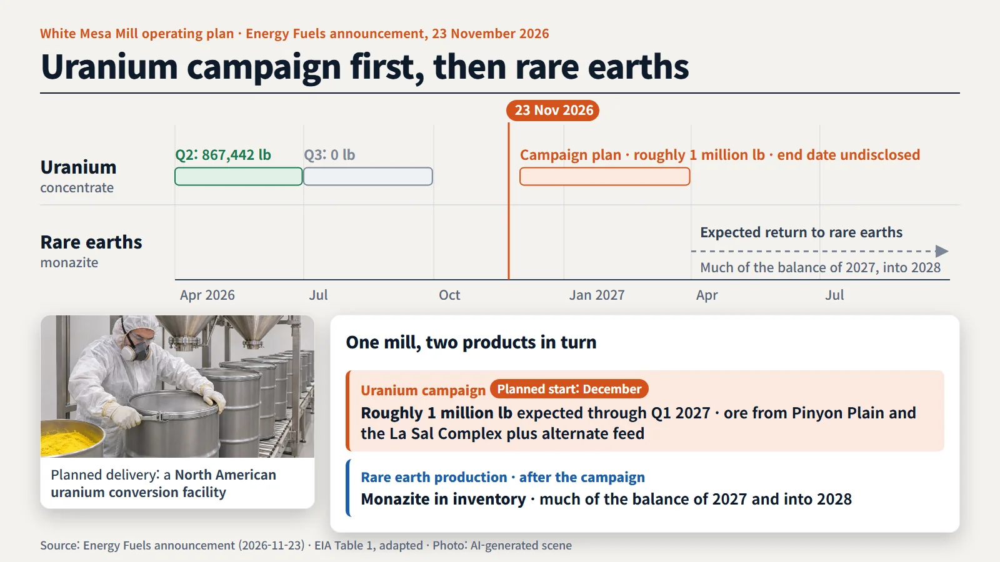

United States · Uranium Supply
White Mesa Mill Restarts Uranium Processing in December: Why One Mill Moves U.S. Quarterly Output
U.S. uranium concentrate output fell to 243,673 lb in the third quarter of 2026, and Energy Fuels plans a campaign of roughly one million pounds from December through the first quarter of 2027.
U.S. uranium production fell 78% in a single quarter. The cause sits at one site, the White Mesa Mill in Utah. The mill paused uranium processing to rebuild its ore inventory, and its output for the third quarter of 2026 was recorded as zero. On 23 November 2026 its owner, Energy Fuels, said it plans to start a new uranium processing campaign in December and run it through the first quarter of 2027, producing roughly one million pounds. Uranium concentrate is the first step of the nuclear fuel supply chain, and the U.S. figure for it swings with the schedule of a single plant. Anyone reading the quarterly numbers needs a way to tell a change in demand or mining from a change in that plant's calendar.

The 243,673 lb quarter: where the drop came from
The U.S. Energy Information Administration (EIA) released its quarterly report in November 2026. It puts third-quarter U.S. production of uranium concentrate (U3O8, the yellow powder often called yellowcake) at 243,673 lb, down 78% from 1,087,504 lb in the second quarter. The formula is (1,087,504 − 243,673) ÷ 1,087,504, which works out to about 77.6%. In metric terms, at 0.4536 kg per pound, the third quarter comes to about 111 tonnes and the second quarter to about 493 tonnes.
EIA attributes the decrease primarily to the White Mesa Mill, which announced it would stop processing in June to rebuild its ore inventory. The mill's own line in the EIA table shows the pattern.
| Quarter | U.S. total (lb U3O8) | White Mesa Mill (lb U3O8) |
|---|---|---|
| Q3 2025 | 329,623 | 0 |
| Q4 2025 | 1,043,474 | 684,947 |
| Q1 2026 | 1,039,075 | 788,404 |
| Q2 2026 | 1,087,504 | 867,442 |
| Q3 2026 | 243,673 | 0 |
(Source: EIA, Domestic Uranium Production Report, 3rd Quarter 2026, Table 1, adapted)
White Mesa's share of the second quarter was 867,442 ÷ 1,087,504, or about 80%. When the mill's output went to zero, the U.S. total fell by 843,831 lb. Output from all other facilities actually rose by 23,611 lb, from 220,062 lb in the second quarter to 243,673 lb in the third. Across the five quarters, the difference between a quarter above one million pounds and a quarter of roughly 240,000 to 330,000 lb comes down to one thing: whether White Mesa was processing uranium.

Conventional milling and in-situ recovery: two routes to uranium
Uranium concentrate is made in two main ways. The first is conventional milling. Ore is mined, trucked to a mill and crushed and ground. Chemicals dissolve the uranium out of the rock, the uranium is separated from that solution and concentrated, and the product is precipitated and dried into concentrate. The process resembles grinding coffee beans and extracting them with hot water, with an added chemical stage that pulls only the uranium out of the brew.

The second is in-situ recovery (ISR). The ore stays in the ground. A solution is injected into the underground ore body to dissolve the uranium, and the solution is pumped back up and processed at a surface plant. All third-quarter U.S. production came from this route. According to EIA, eight facilities produced uranium in the quarter: four in Wyoming, three in Texas and one in Nebraska.
Few conventional mills remain in the United States. EIA's mill table lists four, and the only one classed as operating at the end of the first quarter of 2026 is White Mesa, with a capacity of 2,000 short tons of ore per day. Shootaring Canyon in Utah (750 short tons per day) and Sweetwater in Wyoming (3,000 short tons per day) are on standby, and Sheep Mountain in Wyoming (725 short tons per day) is inactive. Energy Fuels likewise describes White Mesa as the only fully licensed and operating conventional uranium processing facility in the United States. As a result, mined ore is stockpiled and then processed on this mill's schedule, and in a quarter when the mill produces no uranium concentrate, conventional output in the statistics is zero.
The roughly one-million-pound campaign starting in December
The plan Energy Fuels announced on 23 November 2026 has three parts. The company plans to begin the processing campaign in December 2026 and expects it to continue through the first quarter of 2027. It expects the campaign to produce roughly one million pounds of finished uranium concentrate. The feed is ore from the Pinyon Plain mine in Arizona and the La Sal Complex in Utah, together with uranium-bearing alternate feed materials, meaning uranium-bearing material other than ore.
A campaign is a way of running a plant in which the equipment is dedicated to one product for a set period. In its third-quarter results on 4 November, the company said it had completed scheduled routine maintenance and processed alternate feed materials during the quarter, and that ore left unprocessed in the previous run was stockpiled at the mill and at its mines. The December campaign is the run that processes that stockpile.
The table above gives a sense of scale. Roughly one million pounds is about 1.15 times White Mesa's second-quarter output of 867,442 lb (1,000,000 ÷ 867,442), or about 454 tonnes. The company plans to deliver the concentrate to a North American uranium conversion facility. Conversion is the next step, in which concentrate is turned into a compound that can be fed to enrichment.
The company says this production supports deliveries under its existing supply contracts through 2028. It expects to sell 1,110,000 lb to utility customers under long-term contracts in 2027, 35% more than the 820,000 lb sold in 2026. By quarter, that is 465,000 lb in the first quarter, 270,000 lb in the second, 375,000 lb in the third and none in the fourth. The campaign's expected output of roughly one million pounds equals about 90% of the expected 2027 contract sales (1,000,000 ÷ 1,110,000).
Rare earths after the campaign, and how to read the next figures
Once the campaign is complete, Energy Fuels expects to transition the mill back to rare earth production. It will process monazite, a rare-earth feed mineral, that it holds in inventory, and plans to produce rare earths for much of the balance of 2027 and into 2028. The sequence is to secure uranium inventory for contract deliveries first and then use the mill for rare earths.

Laid over the statistics, this schedule gives a guide for the coming quarters. Because the campaign starts in December, fourth-quarter 2026 figures will include production from one month of three, and the rest will fall in the first quarter of 2027. In quarters when the mill has returned to rare earths as planned, ISR facilities will make up the U.S. total, as they did in the third quarter. EIA's next quarterly report is due in February 2027. The exact end date of the campaign, the split of its output between quarters and the share of feed from each mine have not been disclosed.
Over a longer horizon the ore supply changes. The company expects production at Pinyon Plain to wind down in the coming years and is advancing four projects: Whirlwind, Energy Queen, Bullfrog and Nichols Ranch. Together, the company says, they have the potential to add approximately 1.25 million pounds of annual production. First production from Whirlwind is currently scheduled for 2028, subject to permitting and market conditions.
The 78% third-quarter drop and the December restart plan are two faces of one structure. U.S. quarterly uranium output rises sharply while White Mesa processes uranium and returns to the level of the ISR facilities while it processes rare earths. When the next figures arrive, checking this mill's line alongside the total shows the cause of the change at once.